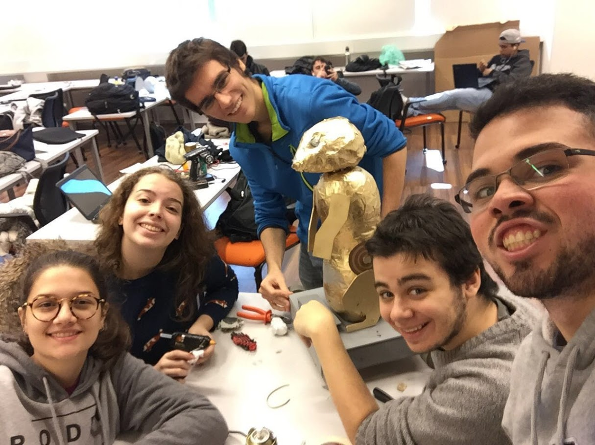

|  | Suricator | |
|---|---|---|
| Data: | abril/2016 | |
| Matéria e Semestre: | Natureza do Design - Primeiro Semestre | |
| Duração: | 4 semanas | |
| Categoria: | Eletrônica, Empreendedorismo Tecnológico, Design Thinking | |
| Documentação: | Escrito técnico, Wiki, desenhos técnicos instrumentados e Sketch | |
| Conteúdo acadêmico: | Design, Prototipação, Empreendedorismo, Produto centrado no usuário, Fablab, Autonomia | |
| Palavras-chave: | Design, Natureza, Movimentos, Brinquedo, Criança, Prototipação, Sketch, Desenho, Produto, Usuário | |
| Descrição: | No projeto final de Natureza do Design, o objetivo era desenvolver um brinquedo para crianças de 6-7 anos. O brinquedo deveria se remeter a um animal. O projeto do meu grupo, foi um Suricato robô , que andava sobre uma plataforma de quatro rodas. A história por trás do brinquedo era de que, o um Dr. que tinha o Suricat como animal de estimação, derramou sem querer uma poção robótica em cima dele, e ele se transformou em um robô malvado. Para converter o Suricator em Suricat, as crianças deveriam mirar um laser na lateral do animal, e conforme o sensor era atingido, o olho do suricato se tornava verde. |
|
| Relacionados: | Empreendedorismo, Programação C | |